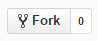
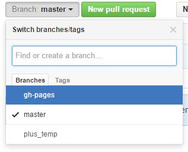
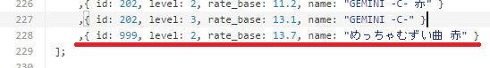
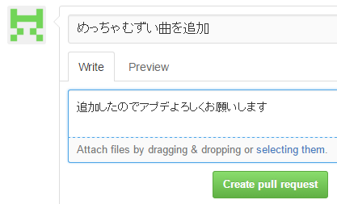
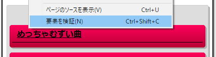

CHUNITHM Rate Analyzer
CHUNITHM のレート上げのお供に！
- どの曲で何点出せばレートが上がるのか
- 今のスコアで出せる最大レート (BEST 枠１位のスコアを１０連続で出した場合)
などを簡単に調べられるツールです。
(計算方法は @capue さんほかの調査によります)
注意
対象譜面
レベル１１～１３＋で、ランクＡ以上が出ているもの (ランクＡを達成していない譜面は未プレイ扱い)。
※レベル１１未満の曲がレートの対象に入っている方 (BEST レート 13 未満) は正しく計算することができません。
スコア情報の取得について
このツールは CHUNITHM NET の内部で使われている URL に直接アクセスすることでスコア情報を収集します。これが「通常想定し得ない方法」による、あるいは「不正な」サービスの利用と解釈された場合、利用規約によってアカウント停止等の処分が行われる可能性があります。
ツールの性質を理解したうえで、各自の判断でご利用ください。このツールを使用したことで起こったトラブルに作者は対応しません。
なお、類似のツールの使用に対して何らかの対策が行われた場合、あるいは公式に表明があった場合、これを類似ツールが「不正」であるという公式見解とみなして公開を取り下げます。
使い方
インストール
起動
- CHUNITHM NET にログイン
- 利用権があることを確認
- CHUNITHM NET の画面を出したまま 、保存しておいたリンクを開く
協力者求む！ (2016/04/09～)
CHUNITHM Rate Analyzer は誰でも開発に参加できます 。
曲の追加だけなら プログラミングも不要 なので、新曲の追加時など、いち早く最新のデータを配信するためにぜひ協力してください！
配信前に僕が簡単にチェックをするので、自信がなくても大丈夫です (いつも協力してくれている方には、僕のチェックなしで即配信できる権限を渡す可能性もあります)。
曲データの追加方法
- (GitHub のアカウントを取得)
- このページ上部の Fork ボタンを押す (→ 自分のアカウントにコピーされる)

gh-pagesブランチに切り替える
chunithm.jsを開いて、右上の鉛筆マークを押す (→ 編集できるようになる)- 曲リストの場所を探して (100 行目あたり)、 一番後ろに 新しい曲を追加する

- 適当な曲データをコピペして、
idを新曲の ID に変更 (調べ方は後述)levelを 「赤譜面なら2/ 紫譜面なら3」 に変更rate_baseを新曲の譜面定数に変更nameを新曲の曲名 (赤譜面なら 曲名＋「赤」) に変更
- ページ下部の Commit Changes ボタンを押す (→ 保存される)

- 「○○を追加」など、どこを変えたかわかるメモを書いてください
- レートアナライザのトップに戻って、New Pull Request を押す
- 適当にメッセージを入れて送信

僕に pull request が届いたら、大丈夫そうか簡単にチェックして、アップデートを配信します。
- 曲 ID の確認方法
- CHUNITHM NET にログイン
- レコードを開いて、絞り込みなどをうまく使って調べたい曲がリストに表示されている状態にする
- 調べたい曲を右クリック → 要素を検証

- 曲名の左に書いてある
sendUserMusicDetail(???)の???が ID
Q&A
- で、結局どうしたらレート上がるの？
-
BEST 枠 (上位３０曲) のスコアを伸ばすか、BEST 枠に入っていない曲を BEST 枠入りさせて BEST 枠平均を上げましょう。
- レートの仕組みを詳しく知りたい
-
リゼット (14 新) 推奨日記 さんに詳しい考察があります。
- スコアがすべて 0 になってるんだけど？
-
CHUNITHM NET 利用権があるか確認してください。
リンク
- リゼット(14新)推奨日記
-
このツールのもとになっている、レートのシステムや計算式、譜面定数の考察があります。
- チュウニズムスコアツール
-
全譜面のスコアをまとめて一覧したり、他のプレーヤーと比較できるツール。スコア取得の仕組みを実装するときに参考にしました。